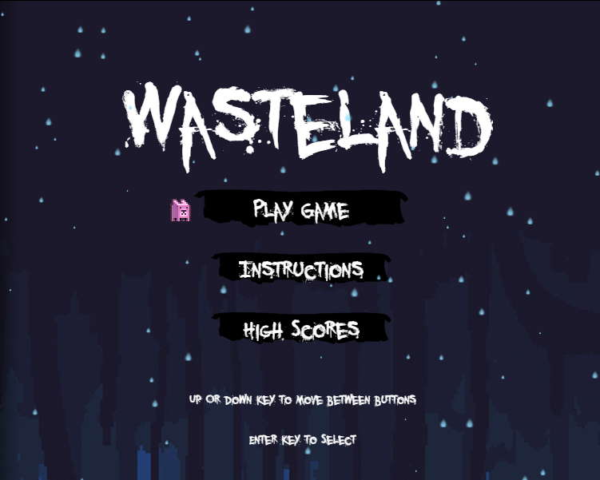
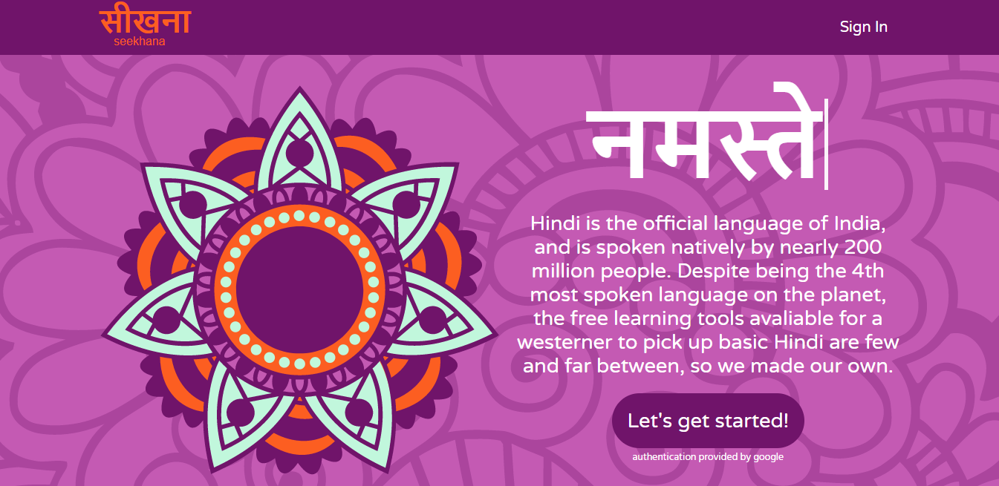

Hi, I’m Paton Vinal a full-stack developer born and raised in the North-East currently based out of Portland, Maine. I’m the son of a carpenter, and have always found the most pleasure out of building things with my own hands. Rather than pursuing the hammer and nail approach of my father, I have taken to building with code.
Prior to getting into coding, I had a business and insurance background. I graduated from University of Maine in Farmington with a Bachelor in Business Economics, helped a fisherman open a new restaurant venture, and after that found myself in the insurance industry working for Acadia Insurance.
After almost five years working in Insurance, I decided it was time to take a leap of faith and pursue a passion of mine, coding. I have not regretted that decision since! Other passions of mine include kayaking, board games, video games, and participating in Tough Mudder events (if you ever feel the desire to be challenged and rewarded with an awe-inspiring level of teamwork between strangers I highly recommend going for a crawl in the mud!).
If you have any questions for me, or would like to know more about how I would be a valuable asset to your team, please feel free to reach out to me at one of the links below.
Wasteland
Wasteland is a 2-D sidescroller built using HTML5 and Phaser. As a group of gamers, we were highly motivated to learn a new language and use our three weeks to create a game. Wasteland is a twist on the typical platformer, the player navigates three different levels where they need to collect pigs to gain additional lives and batteries to keep their light strong. As the timer counts down, so does a radius of light that allows the player vision. Once the timer hits zero the player loses. While navigating the level the player also needs to avoid an assortment of enemies that will take a life and reset the player.
Project Stack: Phaser, Javascript, NodeJS, Express, MongoDB, Mongoose, Mlab, Heroku.
Partners: Jamie Wang, Kyle Szeto, and Nick Jones
Project Length: 3 Weeks.
Seekhana
Seekhana is an application created to teach English speakers the basics of Hindi, the current state focuses on the hindi alphabet. The primary goal of this application was to work with a partner and create a spaced repetition algorithm.
The Algorithm: All questions start with a multiplier of 1. When a user answers a question incorrectly the multiplier is divided by 1.7, whereas if they answer correctly it is multiplied by 1.7 with a cap at 1. We came to this value through testing, it felt like the right number of places to guarantee the user sees the question again sooner than one answered correctly, but it's far enough in where the user won't just remember the question. This multiplier is then multiplied against a moveFactor that is a value equal to the lesson length less a random value between 1 and 5, and moved that many places forward into the lesson.
Project Stack: React, NodeJS, MongoDB, Express, Heroku.
Partner: William Martin.
Project Length: 1 Week.
The Quiz Manager

Quiz Manager is an application that allows admins to monitor their list of users and the statuses of the users’ required materials. It also creates a platform for users to view the list of required materials and access the content.
To log into the demo as an admin use the username: Admin and password: test-password. To log in as a user use the username: UserOne and password: test-password.
Project Stack: React, Redux, Node, Express, Mongoose, MongoDB
Partner: Jonathan Fitzgibbon.
Project Length: 1 Week.
GOTTA KNOW 'EM ALL

Gotta Know 'Em all was a two day project I worked on with a partner where we needed to use and API and JQuery to do searches. We created this website to demonstrate this allowing users to search a Pokemon API based upon the Pokemon's name or ability. From there the user can learn more information on the abilities or pokemon.
Stack: JQuery, CSS, HTML
Partner: Patrice White.
Project Length: 2 Days.
PATON VINAL.
Front End Web Developer.
"Totally Mad. Utter nonsense. But we'll do it because it's brilliant nonsense."
JavaScript. React. Redux. NodeJS. JQuery.